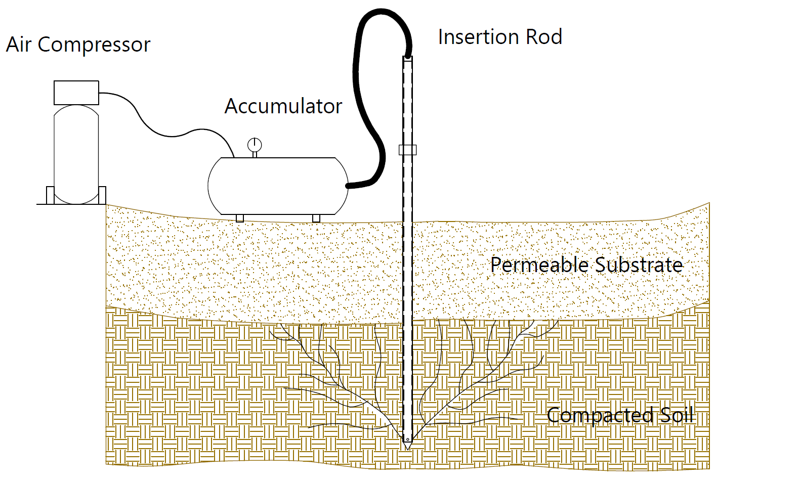
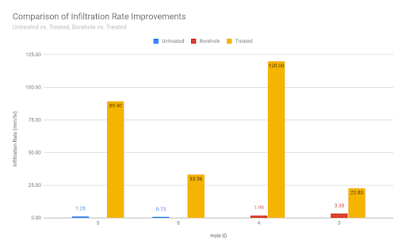
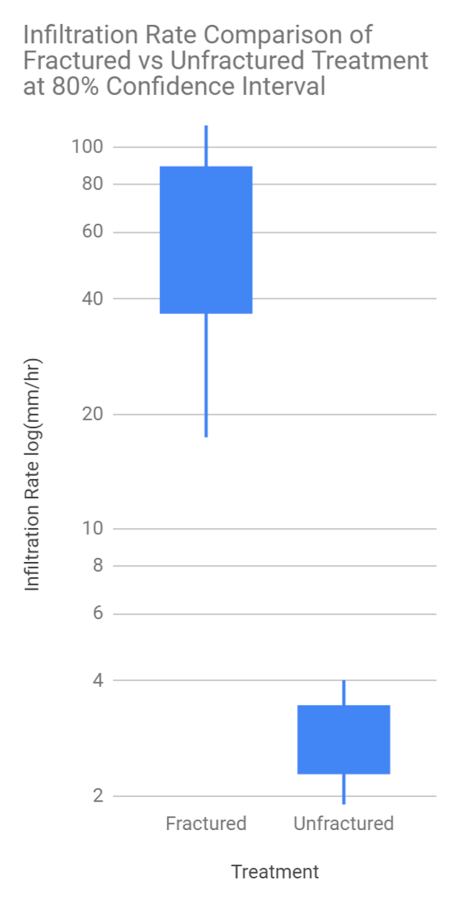

Biofrack, LLC designs devices that are capable of remediating compacted soils without removing or replacing the soil using techniques derived from hydraullic gas fracking. This approach was devised during a biosystems engineering senior design project, subsequent testing has proven this approach to be both technically and economically effective at amending wet and compacted soils. After hydraullical pressure fractures the soil, a renewable carbon based substrate, biochar, flows into the fractures and remains there - where it holds the fractures open and filters the high flows of stormwater that can now infiltrate into the subsoil.
Any industry which frequently drives heavy machinery over soils could benefit from this approach to remediation. Since there was no alternative in the past, most urban soils are overly compacted today - leading to higher flows of runoff for the same levels of precepitation. We will work with industries and municipalities to restore the health of their soils.
Biofrack Injection Process
An injection tube is inserted into the ground using a manual post driver. If the ground proves too hard for manual tube insertion, a pilot hole may be cut with a corkscrew auger. Additionally, the tube may be inserted using a pneumatic or hydraulic post driver. The top of the tube is then connected via hydraulic hose to a pressurized accumulator full of the mixture of biochar and water. Finally, a valve is opened which allows the mixture to flow into the soil. The slurry fractures the substrate as it moves towards the surface, depositing biochar into the fractures along the way. Following fracking treatment, the hose is detached, and the tube is removed using a high lift jack with tow chains. The process takes no more than 15 minutes per injection, requires 1-2 laborers, and affects an area ranging from 50 to 150 square feet. A pilot hole is drilled into the soil before driving an injection rod 3 feet into the subsoil. Then the top of the rod is connected to the pressurized accumulator full of the mixture of biochar and water. Finally a valve is turned which allows the mixture to flow into the soil, fracturing the substrate as it moves towards the surface, depositing biochar into the fractures along the way.
System and Applications

We have reapplied fracking technology in the interest of environmental health and packaged it in an extremely versatile design. Compacted soils which previously required removal and replacement can be restructured for improved infiltration rates or increased root depth using Biofrack's proprietary slurry injection system. By fracturing the soil, compaction can be reduced at depths of 3 to 4 feet. This shifts the distribution of pore sizes present in the structure of the soil quickly and cheaply, requiring only one gallon of substrate to treat 100 gallons of soil volume This is accomplished by creating fractures and filling them with a porous, highly adsorbent substrate: biochar. The fractures create a preferential flow path for stormwater, and the biochar deposited within the fracture network acts as a filter. Biochar is a granular form of activated carbon - not dissimilar from what you would find in a water pitcher filter. Biochar’s adsorption properties allow it to remove contaminants from water at a high rate. It has beneficial mechanical properties too, including a high compressive strength to hold the fractures open and a high porosity to allow a high flow rate. To achieve additional filtration, the flow rate can be reduced by adding different particle sizes to the biochar mix.

Civil
Stormwater Control Measure Enhancement and Remediation
The ability of a surface to remove runoff through infiltration is related to runoff coefficient, C, in hydrological engineering. This dimensionless coefficient is utilized when modeling sites to create erosion control plans. Depending on the type of surface, C can have larger values in areas with low infiltration and high runoff (urban development, asphalt/pavement, steep slopes, etc.), and can have lower values in permeable, well-vegetated areas (grass, forest, flat land, etc.). Although these surfaces were previously limited to traditional ground covers, new research has allowed engineers to assign C values to new erosion control measures like rain gardens. This research is based on testing and performance of a particular rain garden design being implemented in similar soil types.
Rain gardens are expensive and can fail easily. Once engineers begin implementing these permanent erosion control measures, a compaction layer will inevitably form below the rain garden. The root systems established by vegetation would typically prevent compaction by holding open the available flow paths. However, during the initial years of establishment, there is a risk that rooting depth could be limited by a compaction layer that forms more rapidly or by a compaction layer that exists before the rain garden is even installed (compacted by heavy machinery). Moreover, sustained ponding due to compaction within rain gardens can kill established vegetation. The destruction of vegetation consequently eliminates the root system that was responsible for making flow paths available and filtering stormwater. The current strategy for fixing failed rain gardens involves removing the sub-soil and replacing it with sand, gravel, or uncompacted fill material. This requires replanting the entire garden and represents a large expenditure of money, time, and labor. However, Biofrack can achieve the same results: in less than an hour, with two laborers, and at a small fraction of the traditional cost. Disregard the preceding sentence - Biofrack can achieve vastly greater results than traditional rain garden remediation techniques while operating within those same parameters.
Environmental
Bioretention and Carbon Sequestration
Areas that require additional contaminant removal from runoff could benefit from biofracking.
When applied to the surface, the maximum depth of carbon integration into soil over time is only 20 cm. By increasing the depth, this device increases the maximum density of carbon sequestration in soil through biochar application possible in soil by increasing the depth of application.
Agriculture
Carbon and Fertilizer Amendment
Break up hard pans at depth without tilling or ripping the soil.
Deep irrigation - apply subsurface water at any time of day with no risk of evaporation or uptake by weeds.
Control infiltration rate by customizing the mix of biochar amendment injected.
Biochar is proving to be a useful soil amendment [ref papers], however surface application rates need to be high to have signifigant effects. By injecting biochar at root level, volatilization of N can be reduced. The fractures create a preferential flow path, allowing the biochar to reabsorb surface applied fertalizer before it leaves the root zone.
Residential
Flash Flooding Reduction
Home and landowners experiencing drainage problems on their property (e.g., low spots that sustain heavy ponding and will not infiltrate, chronic muddy areas, etc.) can utilize Biofrack’s injection technology to alleviate clogged soil and improve soil structure (with biochar amendments).
Flash Flooding Reduction - Enhancing infiltration in green spaces will reduce runoff, which by extension will reduce flashiness of urban streams and creeks.
Environmental Stewardship Program - reduce runoff at its source to lower municipal wastewater volume.
Also, mitigate erosion and turbidity in order to safeguard native species, like the exotic hellbender.
Alleviate other drainage issues: prevent flooding, reduce pressure on retaining walls, and minimize erosion problems due to flow concentration.
Results of Initial Infiltration Testing
Comparison of Infiltration Rates

Testing plots were constructed and compacted to at least the same degree as can be found in failed rain gardens. Initial infiltration rates were measured in untreated plots at steady state to form a baseline for infiltration ability. Testing plots were then modified by driving the injection probe into their center without fracturing, thus creating boreholes. Infiltration rates were measured in the borehole plots to ascertain whether the additional contact surface area had any effect. Testing plots were then fracked with the biochar slurry. A final round of infiltration rate tests was conducted. The rates measured in the three distinct testing plot types were compared. The borehole elicited small increases in the average infiltration rate, but there were significant increases in performance between the untreated plots and the fracked plots. Subsequent infiltration rate measurements taken 30 days later suggested that the fracture networks induced by injection remained resilient.

The candle stick graph above compares the infiltration rate for 300 gallons of water being passed through the plot between all fractured and unfracture plots. The 80% confidence interval was chosen to compare these two highly variable datasets and the data was plotted on a log scale, as is standard when comparing two datasets that differ by an order of magnitude. As you can see, there is no overlap between the treatments - indicating that the biofrack treatment increased the infiltration rate by a statistically signifigant amount.
Awards
This project has won academic awards in its prototype form; placing first in the G.B. Gunlogson Student Environmental Design Open-Format Competition hosted by the American Society of Agricultural and Biological Engineers (ASABE) and placing second in EURēCA (Exhibition of Undergraduate Research and Creative Achievement) at the University of Tennessee, Knoxville. More details about these awards and the design team can be found at UTIA's website.
EURēCA 2019 Second Place Winners of the capstone design competition for the poster titled "Rain Garden Remediation and Infiltration Enhancement by Biochar Injection System" by Matthew Johnsen, Ryan Watson, James Lewis, and Christian Patterson as part of their Biosystems Engineering Senior Design.
Contact
1-833-FRACKIT info@biofrack.com
Interested in using Biofrack for research or remediation?
Let us know